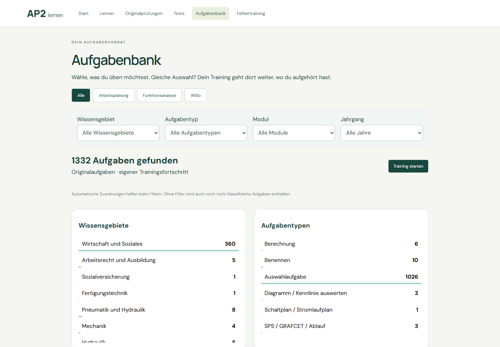


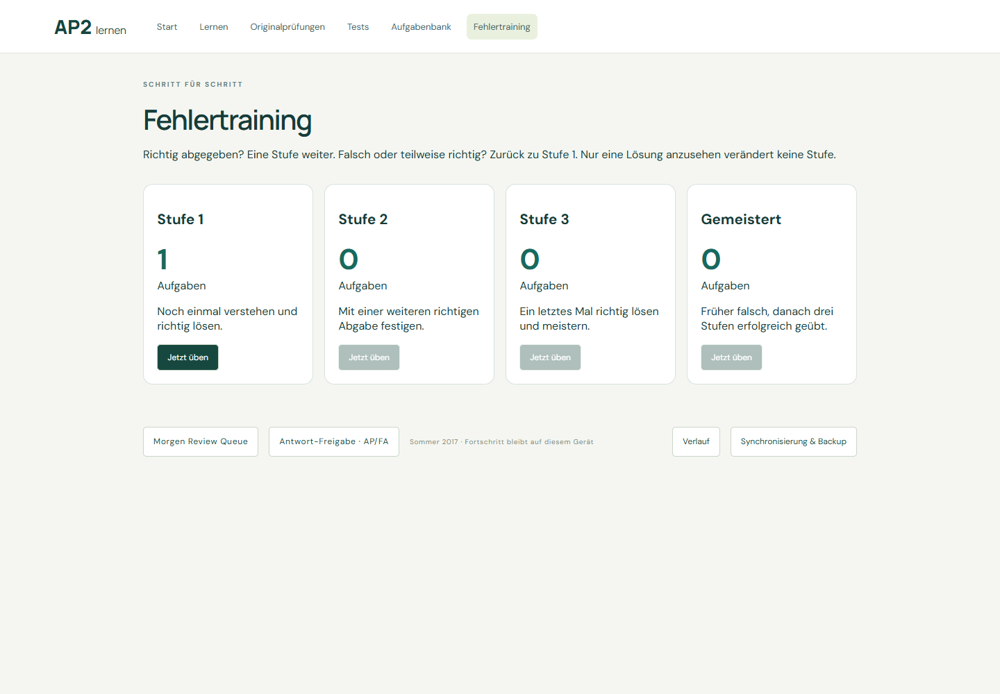

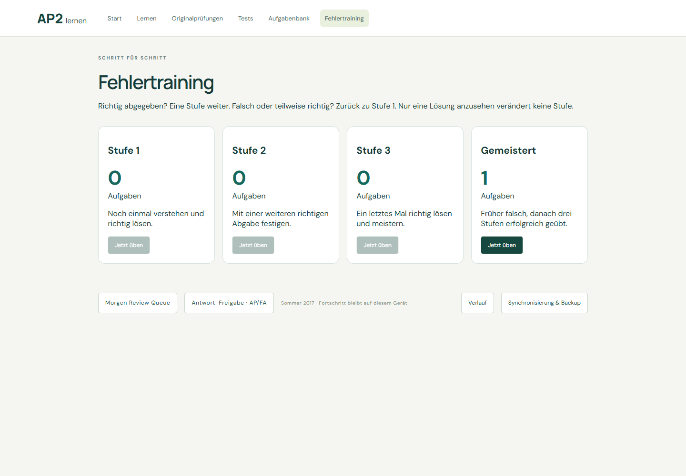

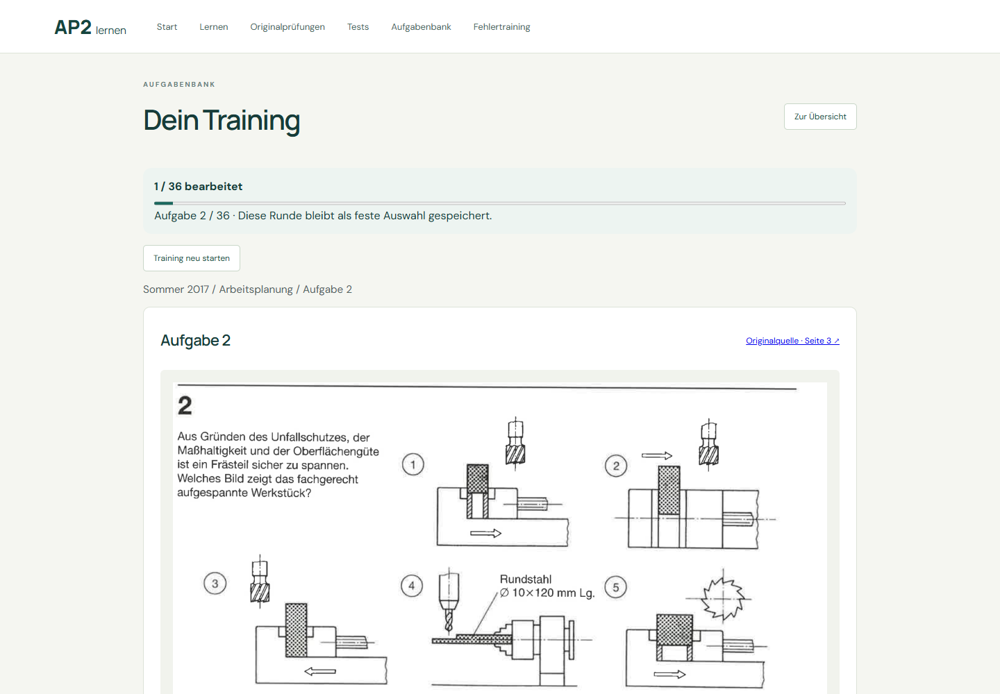

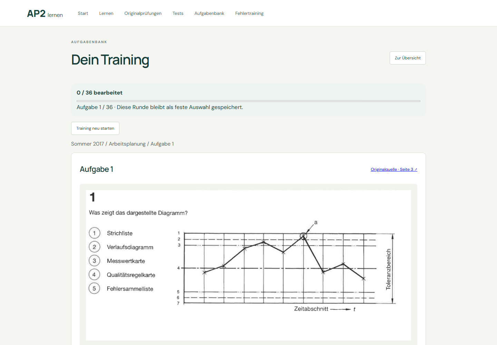

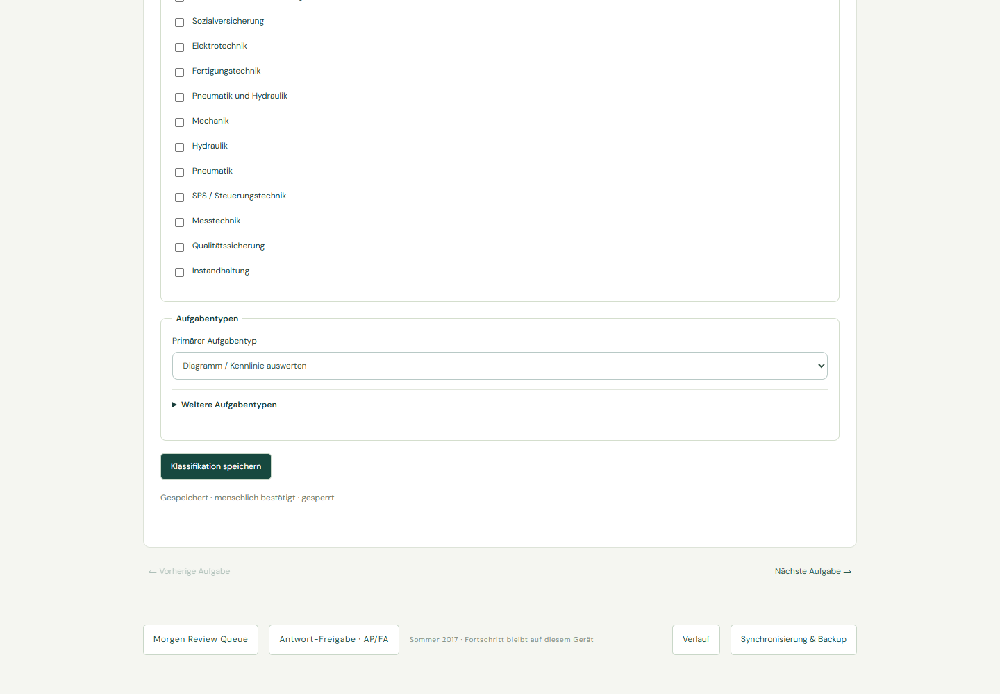

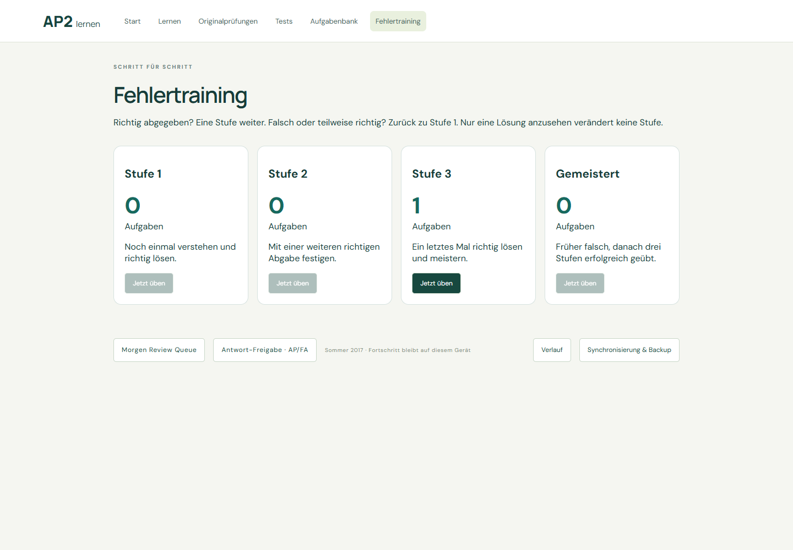

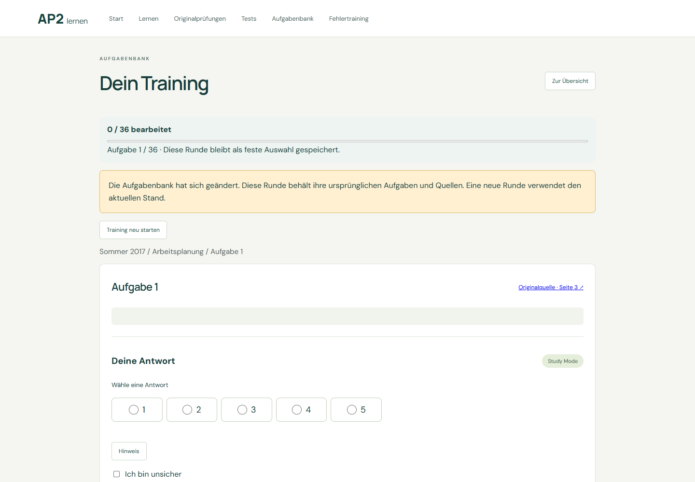

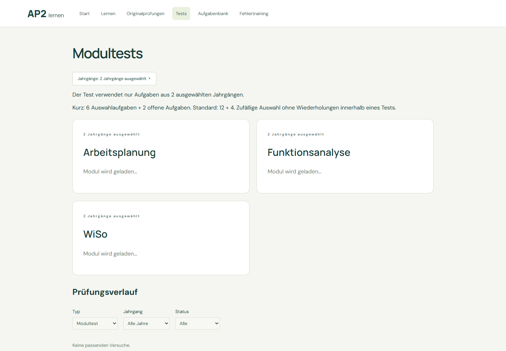

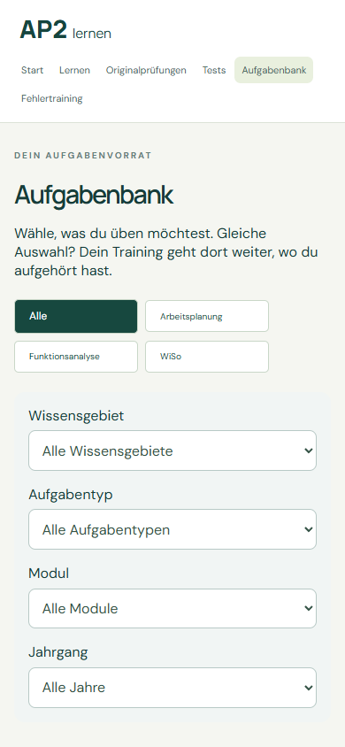

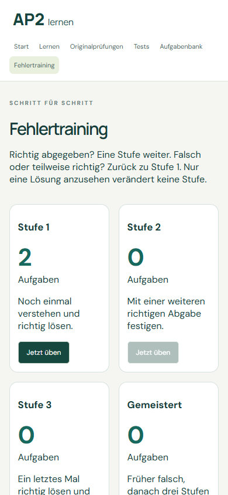

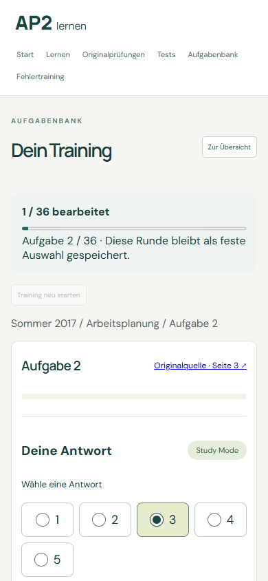
Aufgabenbank, durable independent training and four-stage Fehlertraining.












All test data shown here was created in isolated browser contexts. No real personal learning data was modified. No PDF ingestion or Firebase activation.